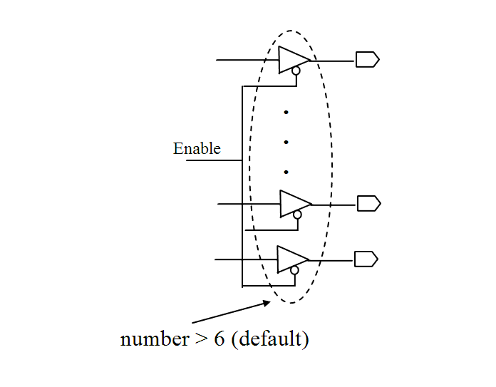

| Description | This rule fires when Leda detects an output enable signal used to control more than MAX_DRIVING_NUMBER of primary outputs. Removing such signals from the design helps avoid data faults in primary outputs caused by poor driving strength of the enable signal.You can configure this rule using the rule_set_parameter Tcl command and the MAX_DRIVING_NUMBER parameter. The default value is 6. For example:
leda> rule_set_parameter -rule NTL_STR20 \
-parameter MAX_DRIVING_NUMBER -value {8}
|
| Policy | DESIGN |
| Ruleset | STRUCTURE |
| Language | VHDL/Verilog |
| Type | Hardware |
| Severity | Error |
This is an example of invalid Verilog code, followed by a circuit diagram that illustrates the problem:
module ntl_str20_top; ... output Dout_0, Dout_1, Dout_2, Dout_3, Dout_4, Dout_5, Dout_6; ... wire Enable; //enable signal wire Din_0, Din_1, Din_2, Din_3, Din_4, Din_5, Din_6, Din_7; bufif0 I0(Dout_0, Din_0, Enable); bufif0 I1(Dout_1, Din_1, Enable); bufif0 I2(Dout_2, Din_2, Enable); bufif0 I3(Dout_3, Din_3, Enable); bufif0 I4(Dout_4, Din_4, Enable); bufif0 I5(Dout_5, Din_5, Enable); bufif0 I6(Dout_6, Din_6, Enable); // NTL_STR20 fires -- enable signal is assigned to 7 times // (the default is 6) endmodule